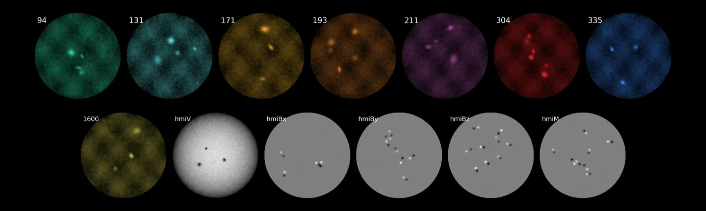
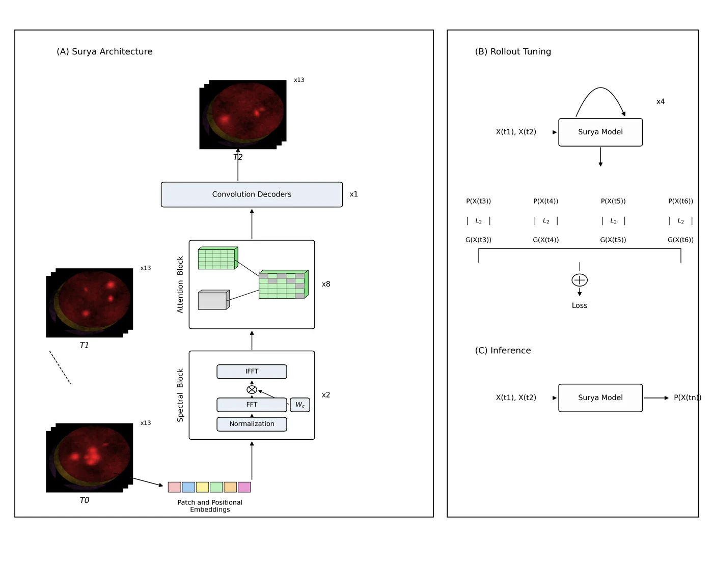
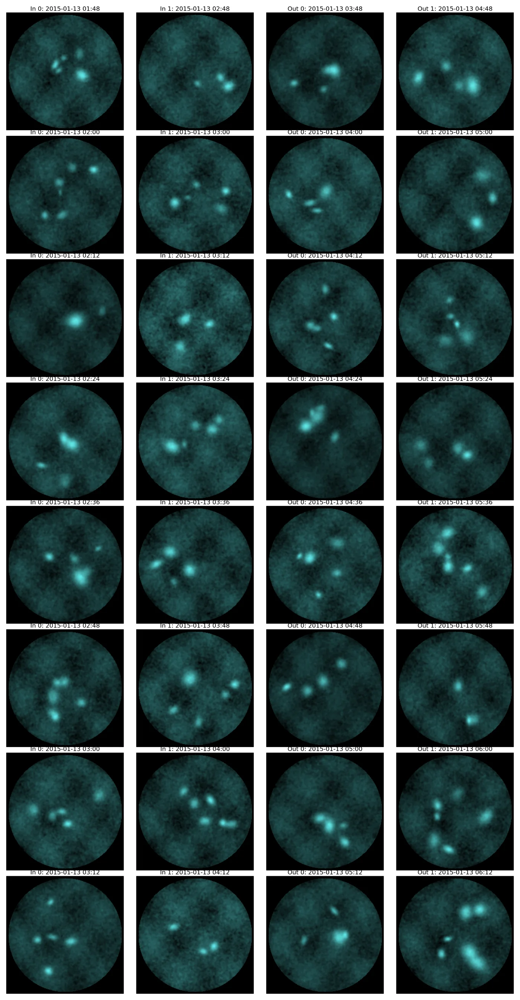

Surya — Heliophysics Foundation Model
The Sunforge
The Sunforge keeps fourteen years of the sun's memory — some 257 terabytes of it, gathered through thirteen windows onto the burning face: eight of AIA's colored glass, five of HMI's. None of the panes were ever shrunk; every reading is taken at the native 4096×4096, for a prophecy misread at small scale is no prophecy at all.
In the forge's heart a spatio-temporal transformer was raised — 366 million parameters of spectral gating and long–short attention, hammered into shape across 128 A100 furnaces, then taught to roll its visions forward hour over hour, and tuned with LoRA charms for each new kind of telling.
And the tellings hold. Flares are called a day before they break. The solar wind is read four days out, truer than the published charts. The extreme-ultraviolet spectrum is recited to within a breath of the operational oracle — from one model, not many.
Project record
Co-developed a generative architecture trained on multi-year solar image archives for solar flare and solar wind prediction. Distributed training on NVIDIA DGX / NAS clusters via SLURM and PBS.
Role
Co-developer (NASA IMPACT) — led exploratory data analysis on the multi-year solar image archives, trained and benchmarked transformer architectures on NVIDIA DGX and NAS clusters via SLURM and PBS, fine-tuned the foundation model with LoRA adapters for solar-flare and solar-wind prediction, and designed the convolutional baselines.
Stack
Results
- Solar-flare forecasting TSS 0.436 (24 h window, M/X threshold) vs. 0.358 for the AlexNet baseline; solar-wind RMSE 75.92 km/s at 4-day lead vs. 84–86 km/s for published WindNet variants.
- Active-region segmentation IoU 0.768 with only 4.1 M trainable parameters, vs. UNet's 0.688 with 9.2 M.
Links
Artifacts from the realm


